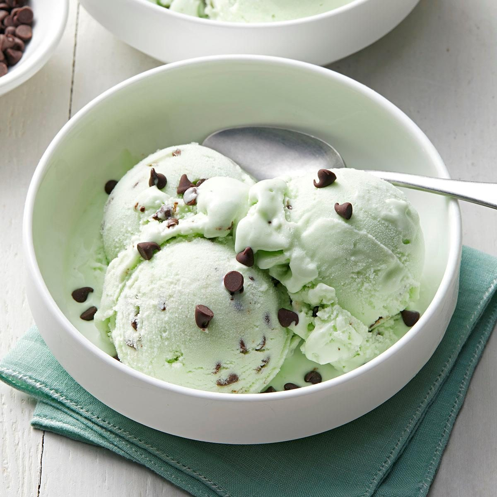

Home
Mint Chocolate Chip Ice Cream

Description
This mint chocolate chip ice cream is made in an ice cream maker with
milk, cream, sugar, peppermint extract, and lots of chocolate chips. I
discovered using 2% milk in the recipe makes the ice cream taste lighter.
Super refreshing on a hot summer day!
Ingredients
1 teaspoon vanilla extract
1 teaspoon peppermint extract
1 cup miniature semisweet chocolate chips
3 drops green food coloring (optional)
Steps
- Gather all ingredients.
-
Stir milk, cream, sugar, vanilla, peppermint extract, and salt together in
a large bowl until the sugar has dissolved. Mix in green food coloring.
-
Pour mixture into an ice cream maker and freeze according to
manufacturer's instructions.
-
Add chocolate chips about 10 minutes into the freezing. Continue churning
until ice cream has thickened, about 20 minutes more.
-
Transfer to an airtight container and freeze until firm, about 2 hours.
- Serve and enjoy!